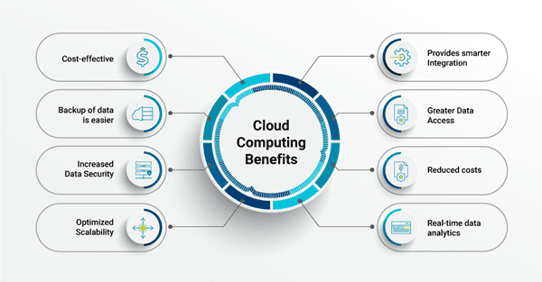

Secure, Scalable Cloud Architecture with Cost Optimization and High Availability

As digital businesses grow, legacy hosting environments often become bottlenecks. Performance instability, limited scalability, and rising operational costs create risk for revenue, customer experience, and long-term expansion.
This case study outlines how a fragmented on-premise and shared-hosting environment was transformed into a secure, scalable, and optimized cloud infrastructure designed for performance and cost efficiency.
The client operated a high-traffic digital platform handling transactional workloads, user authentication systems, and API-based integrations. Their existing infrastructure combined shared hosting and aging on-premise servers, resulting in unpredictable downtime and limited scalability during traffic spikes.
A phased migration approach was designed to minimize risk and eliminate service disruption.
Workloads were migrated incrementally using replication-based synchronization to ensure zero-to-minimal downtime. DNS cutover was performed during low-traffic windows.
| Metric | Before Migration | After Optimization |
|---|---|---|
| Application Uptime | 94% | 99.98% |
| Average Page Load | 3.2 sec | 1.1 sec |
| Scalability | Manual Upgrade Required | Auto-Scaling Enabled |
| Disaster Recovery | Manual Backups | Automated Multi-AZ Backup |
| Monthly Cost | Unoptimized High Spend | Reduced by 28% |
The new cloud environment supports seamless scaling during marketing campaigns and traffic surges. Auto-scaling policies dynamically adjust compute capacity, ensuring performance stability without manual intervention.
The architecture also supports containerized workloads, CI/CD integration, and hybrid cloud extensions if required in the future.
The migration project successfully transitioned the organization from unstable legacy hosting to a structured, secure, and optimized cloud environment.
By combining high availability, security hardening, observability, and cost governance, the infrastructure now supports both operational reliability and long-term strategic growth.
← Back to Case Studies